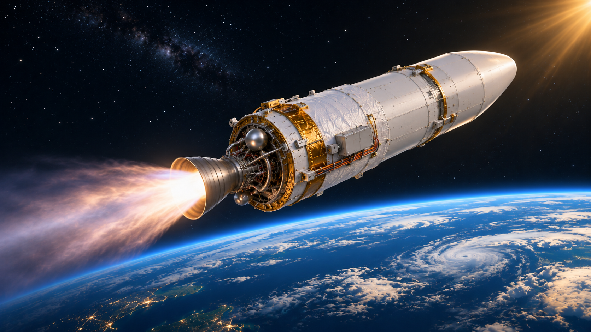

火箭科學 · 控制變因
氣球火箭探究紀錄單
用氣球、吸管與細繩觀察推進方向，設計一次只改變一項條件的比較活動。

學習目標與準備
- 描述噴氣方向與氣球移動方向的關係。
- 區分改變、固定與測量的條件，練習重複測量。
每組一顆氣球、一段吸管、細繩、膠帶、夾子、打氣筒與捲尺。
下方可預覽學生版。開啟列印版後，可選擇只印活動單，或加印教師指引。
下一站，宇宙！ · 學生活動單
氣球火箭探究紀錄單
班級：＿＿＿＿ 姓名：＿＿＿＿ 日期：＿＿＿＿
將細繩穿過吸管並拉平固定，用膠帶把氣球貼在吸管下方。以打氣筒充氣後夾住開口，統一從起點鬆開。比較充氣量較少與較多兩組條件，使用同一顆氣球和相同裝置，每種條件各試兩次。
| 充氣條件（記錄氣球周長） | 第 1 次距離（cm） | 第 2 次距離（cm） | 我觀察到的方向 |
|---|---|---|---|
| 較少：＿＿ cm | 填寫區 | 填寫區 | 填寫區 |
| 較多：＿＿ cm | 填寫區 | 填寫區 | 填寫區 |
畫出裝置，分別用箭頭標出氣體噴出方向與氣球移動方向。
我們改變了＿＿；保持相同的是＿＿；測量的是＿＿。
根據兩次結果，你能做出什麼結論？哪些摩擦、漏氣或操作差異可能影響結果？
移動距離不是直接測得的推力。請寫出「這次觀察支持什麼」與「這次不能確定什麼」，避免把模型結果無限制套用到真實火箭。
展開教師指引與參考答案
教師指引與參考答案
學習目標
- 描述噴氣方向與氣球移動方向的關係。
- 區分改變、固定與測量的條件，練習重複測量。
準備材料
每組一顆氣球、一段吸管、細繩、膠帶、夾子、打氣筒與捲尺。
課堂流程 · 40 分鐘
- 預測方向 · 5 分鐘
先畫噴氣與移動方向，留下原始想法。
- 架設與比較 · 20 分鐘
分組確認繩子水平，固定其他條件後各試兩次。
- 分享證據 · 10 分鐘
比較結果是否一致，討論摩擦和漏氣的影響。
- 連結火箭 · 5 分鐘
回到文章，說明火箭透過向後噴出物質獲得推力。
參考答案與討論重點
- 氣體從開口向後噴，氣球通常沿繩向相反方向移動；接受與實際裝置一致的圖示。
- 改變充氣量；保持氣球、繩長、起點、吸管、黏貼方式與繩子傾斜程度相同；測量移動距離。
- 實測距離可能不同，不預設較多充氣必定更遠。氣球模型同時受摩擦、氣流與形狀變化影響，不能直接把距離當成推力。
形成性評量
方向標示正確，至少列出兩項控制條件，並以實測結果而非預期答案作結論。